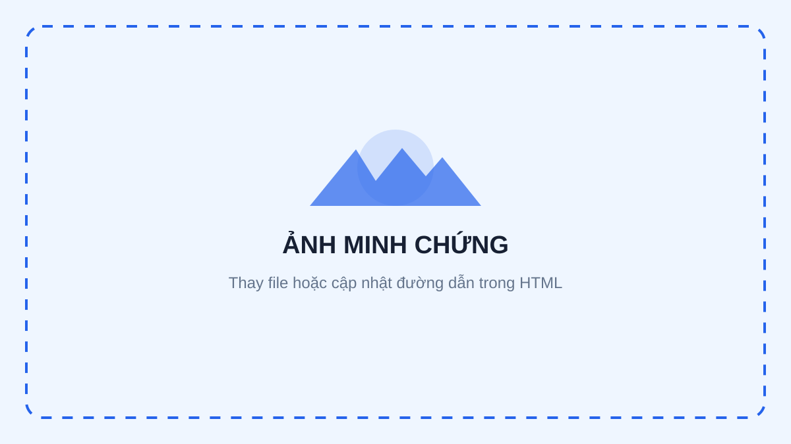

Quản lý tệp và thư mục

Cách tổ chức
[Mô tả cấu trúc thư mục theo môn học, tuần hoặc loại tài liệu. Giải thích cách cấu trúc này giúp bạn tìm và sao lưu dữ liệu.]
Quy tắc đặt tên
[Nêu quy tắc nhất quán, ví dụ: Task01_TenNoiDung_PhiênBản_NgàyTháng. Giải thích lý do tránh ký tự đặc biệt và tên file mơ hồ.]